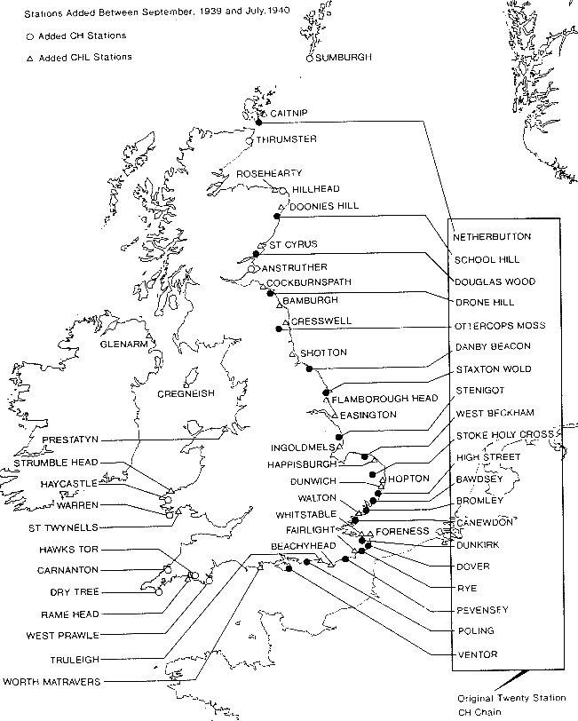
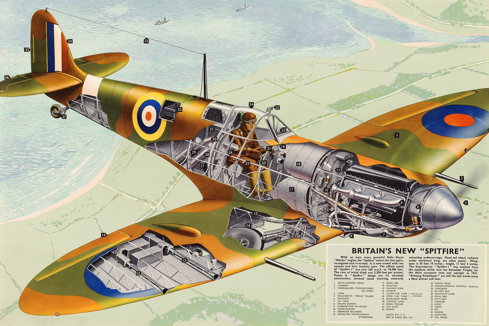
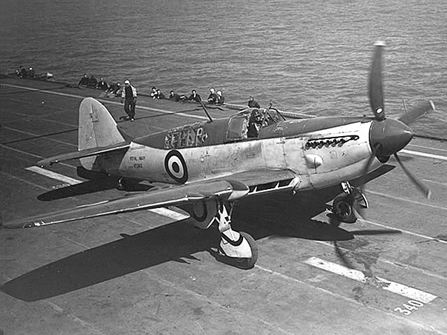
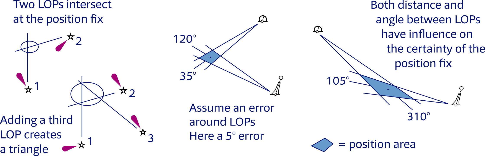
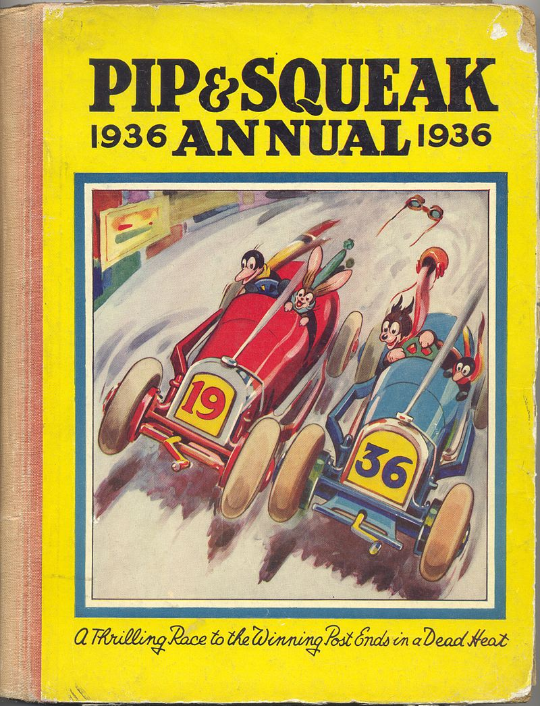

무선침묵 이야기 (7) - 뜻밖의 사용례
게시: 2024-09-05T06:30:08+09:00
<항법에 젬병인 조종사들> 전파 방향 탐지에 의한 유보트 사냥 이야기를 하기 전에 잠깐, 다시 영국 공군 이야기를 해야 함. 로열 에어포스는 WW2를 앞두고 압도적인 독일 공군 루프트바페를 상대하기 위해 비밀리에 레이더, 즉 Chain-home 시스템을 구축. 이 체인-홈 레이더 시스템은 오로지 바다 건너 유럽 대륙에서 날아오는 루프트바페 폭격기들을 탐지하여 그쪽으로 아군 요격기들을 보내기 위한 것이다보니, 아예 쳐다보는 감시 구역도 고정되어 있었음. 즉, 해안가에 설치된 레이더들은 바다쪽만 쳐다볼 수 있었고 내륙 하늘은 전혀 볼 수 없었음.

(체인-홈 레이더 사이트들의 위치. 모두 해안에 위치했고 또 바다쪽을 향하고 있음.) 그렇게 되니 일단 해안선을 통과한 루프트바페 폭격기들은 감시망에서 벗어나게 된다는 문제도 있었지만 그건 큰 문제가 아니었음. 내륙에는 빼곡하게 망원경을 든 민간인 아저씨들과 아줌마들로 구성된 인적 감시망이 있었기 때문. 진짜 문제는 의외로 내륙에서 출발하는 아군 전투기들을 볼 수 없다는 것. 그게 왜 문제냐 하면, 당시 로열 에어포스 전투기 조종사들은 그냥 비행기 조종이나 하고 기관총 조준이나 할 줄 알았지 별이나 태양을 보고 위치를 찾는 항법 실력은 젬병이었기 때문. 레이더 관제사들이 아무리 루프트바페 폭격기의 현재 위치를 정확하게 위도 경도로 알려줘도, 전투기 조종사들은 그 위치로 찾아갈 능력이 없었다는 이야기. 그러니 적 폭격기까지 아군 전투기들을 유도하려면 적 폭격기의 위치를 위도 경도로 알려줄 것이 아니라, 아군 전투기의 현재 위치에서 요격 위치로 가기 위한 방위각과 거리를 알려줘야 했음. 그런데 아군 전투기의 위치를 알아야 그 방위각과 거리를 알려줄 것이 아닌가?

(공군 소속 Supermarine Spitfire 같은 1인승 전투기들은 주로 땅 위의 도시와 산, 강, 도로 등을 보고 자신의 위치를 파악했다고. 이런 조종사들을 아무것도 없는 먼 바다 위로 보내내면 항법이 거의 불가능.)

(원래 아무것도 없는 원양에서 모함을 찾아와야 하는 해군 조종사들의 항법 실력은 좀더 나았다지만 로열 네이비에서도 함재 전투기를 2인승으로 만들어 항법사를 따로 태우려고 했던 것에는 다 이유가 있음. 사진은 WW2 당시 로열 네이비의 함재 전투기 Fairey Firefly. 2인승인데 뒤에 앉은 사람은 탐색/무전/항법사 역할.) 그 문제에 대한 답이 있긴 했음. 어차피 레이더의 효용은 루프트바페 폭격기들이 영국 영토에 들어오기 전에 바다 위에서 격추하자는 것이니, 아군 전투기들이 바다 위로 나가서 체인-홈 레이더에 보이게 되면 그때부터 유도를 해주면 되는 것. 하지만 거기에도 문제가 있었으니... 바다 위에 비행기들이 잔뜩 보이는데 어느 것이 아군 전투기이고 어느 것이 적 폭격기인지 구별하기가 어려웠다는 점. 당시는 아직 피아식별 장치인 IFF (Identification, Friend or Foe)가 발명되기 전이었기 때문. 게다가 적 폭격기들이 체인-홈 레이더의 감시망을 벗어나 내륙으로 침투하기 전에 빨리 유도를 해야 하는데, 아군 전투기 위치 파악까지 해야 하니 시간이 너무 부족했음. <번개 탐지기의 재등장> 그래서 나온 것이 바로 왓슨-왓 박사의 번개 탐지기. 당시 방어자의 입장인 로열 에어포스 전투기들은 무선 침묵의 필요성이 전혀 없었기 때문에 요격하러 날아가면서 편대 내에서, 또 레이더 관제실과 조잘조잘 수다를 많이 떨었는데 그 아군 통신 주파수도 당연히 아군은 알고 있었음. 이를 이용하여, 서로 먼 거리를 두고 배치된 두 번개 탐지기, 즉 adcock 안테나와 오실로스코프를 연결한 전파 방향 탐지기에서 각각 탐지한 아군 통신망의 전파 발신원 방위각을 중앙의 레이더 관제실에 전화로 보고했음. 그러면 중앙의 관제실에서는 (주로 여성들로 이루어진) 관제사들이 삼각 측량을 이용하여 두 곳에서 측정된 방위각을 조합하여 아군 전투기의 위치를 찾아 중앙 상황판에 표시했음. 그걸 보고 레이더 관제사는 아군 요격기들에 "72도 방위각, 270 노트의 속력으로 날아가라"고 유도하는 것.

(정확한 위치를 알고 있는 두 곳에서 어느 한 목표물의 방위각을 측정할 수 있다면 삼각 측량을 통해서 지도상의 그 위도 경도를 구할 수 있음. 이건 삼각함수도 필요없고 그냥 지도와 각도기, 자만 있으면 됨.) 그런데 로열 에어포스의 조종사들이 가끔씩은 또 과묵한 경우가 있어서 무선 통신이 한동안 없는 경우도 발생. 삶과 죽음의 갈림길로 날아가는 조종사들은 가뜩이나 심란했을 텐데 그들의 위치 파악을 위해 계속 무전기로 떠들라고 강요할 수도 없는 일. 그래서 곧 pip-squeak이라는 장치가 개발됨. 이는 번개 탐지기가 아군 전투기의 방위각을 측정할 수 있도록 1kHz의 전파를 14초씩 주기적으로 전송하는 시스템.

(Pip-sqeak이라는 이름은 영국 Daily Mirror지에 1919년부터 연재되던 Pip, Squeak and Wilfred이라는 이름의 연재 만화에서 나온 것. Pip은 개, Squeak은 펭귄, 윌프레드는 토끼.) 이렇게 영국의 전파 방향 탐지기는 Battle of Britain에 매우 쏠쏠하게 사용되었는데, 더욱 중요한 사용처는 거기에 국한되지 않았음. 진짜 중요한 사용처는 바로 U-boat 사냥.